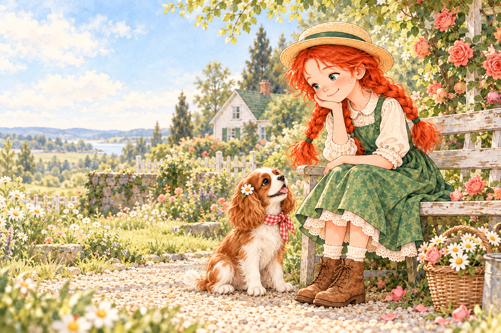
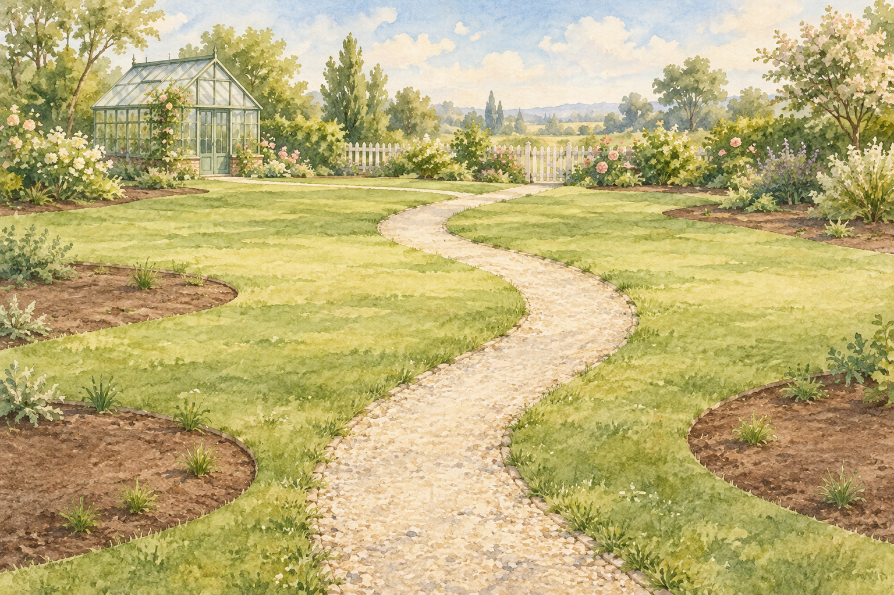

앤이 건네는 한 줄
L. M. Montgomery · Anne of Green Gables
A LITTLE ROOM FOR HOPE
대단한 하루가 아니어도 괜찮아요.
마음 한 줄, 꽃 한 송이, 나에게 보내는 편지.
앤과 보리 곁에서 오늘의 나를 돌봐요.

A PAGE FOR MY HEART
기쁜 날도, 지친 날도. 지금의 마음은 모두 기록할 가치가 있어요.
A LITTLE GARDEN OF MY OWN
오늘의 마음에서 얻은 씨앗으로, 나만의 계절을 가꿔요.

내 마음이 자라는 자리꽃을 고르면 정원에서 자리를 정할 수 있어요. 선택하지 않으면 빈자리에 다정히 놓아드릴게요.
A LETTER TO MY FUTURE SELF
잊고 싶지 않은 말 하나를 봉투에 담아요. 약속한 날, 여기서 다시 만나요.
A LITTLE ENGLISH, A LITTLE COMFORT
한 줄을 읽고, 뜻을 느끼고, 나의 말로 옮겨봐요. 오늘은 이만큼이면 충분해요.
하루 첫 마무리에는 씨앗 한 개를 드려요.